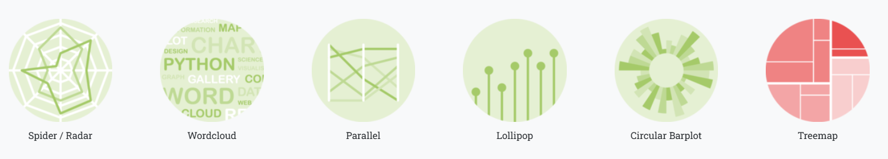
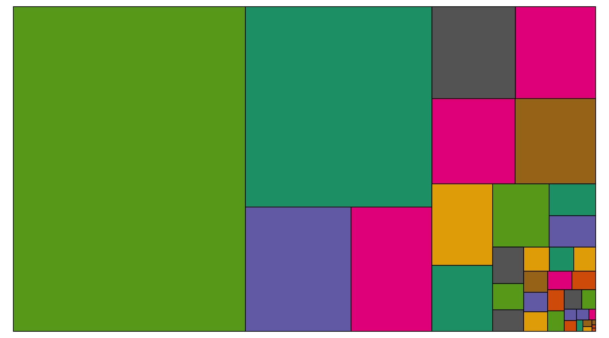

第十二章 数据可视化
数据可视化不是给论文“配图”，而是用图形揭示数据结构、趋势、差异、分布和异常。好的图表能让读者快速理解证据，坏的图表则会遮蔽事实甚至制造误导。学习可视化的重点，不是记住更多图形名称，而是根据问题、数据类型和读者任务选择合适表达。
为什么需要可视化
统计指标并不总能呈现真实结构。Anscombe四重奏说明，几组数据可能具有几乎相同的均值、方差、相关系数和回归线，却呈现完全不同的图形形态。Datasaurus数据集进一步展示，多个数据集拥有相似统计量，却可以画出截然不同的形状。图形能够暴露趋势、离群值、非线性关系和分组差异，这是单纯表格难以做到的。

图表选择从问题开始
如果问题是比较类别大小，可用条形图、点图或棒棒糖图；如果问题是观察时间变化，可用折线图；如果问题是展示分布，可用直方图、箱线图或小提琴图；如果问题是观察两个连续变量关系，可用散点图；如果问题是展示部分与整体，可用堆叠条形图、树图或在少数类别下使用饼图。
同一个数据集可以有多种表达。以“2017年全球武器出口额前50国家”为例，按国家字母排序的条形图虽然完整，却不利于比较；按数值排序后，主要国家之间的差距会更加清楚。图形不是中立容器，排序、颜色、尺度和标注都会影响读者理解。

常见图形及其适用场景
柱形图和条形图多用于类别对比，适合展示不同学段、地区、学校类型或主题类别的数量差异。折线图用于时间趋势，强调连续变化；当观测点较少或每个点都有意义时，可以保留数据点。散点图用于两个数值变量关系，适合检查线性趋势、离群值和分组差异。气泡图可在散点图基础上增加第三个变量，但气泡面积不易精确比较，应谨慎使用。
箱线图用于比较多组数据分布，能呈现中位数、四分位数、上下限和异常值。双坐标图适合量纲不同或数值差距很大的两组数据，但也最容易制造误解；使用时必须明确两轴含义，并避免暗示不存在的关系。金字塔图常用于比较两类群体在多个分组上的结构，如男女年龄结构、城乡学段结构等。

图表修饰服务于理解
图表修饰的目标是帮助读者理解，不是制造视觉刺激。应删除无意义的三维效果、复杂背景、过密网格和装饰图案；坐标轴、单位、样本量、数据来源和统计口径必须清楚；颜色应服务于分组或强调，不应随意使用。若图表在黑白打印中无法区分，说明设计可能过度依赖颜色。
数据差异小时，不宜使用饼图。饼图依赖角度和面积判断，读者很难比较相近比例。若需要比较多个类别，占比条形图往往更清楚。若要突出某一组，可使用颜色强调，但不能通过夸大尺度制造差异。
Excel、网络工具与R
Excel适合快速绘制常见图表，如柱形图、折线图、散点图、箱线图和双坐标图。网络工具如ChartCube、镝数图表、ChartCool等提供引导式制图，适合快速生成展示图。R则适合可复现绘图，尤其是使用ggplot2时，可以把数据、映射、几何对象和主题样式保存在代码中。
library(ggplot2)
ggplot(data, aes(x = group, y = score)) +
geom_boxplot() +
labs(x = "组别", y = "得分")
代码绘图的优势在于可重复修改。若数据更新，只需重新运行代码即可生成同样规范的图表。对于毕业论文和研究报告，代码化绘图比反复手工调整更可靠。
AI辅助绘图
AI可以帮助建议图表类型、生成R或Python代码、优化图题和检查配色。但AI并不知道变量的真实含义，也无法自动判断数据口径。使用AI绘图时，研究者必须明确告诉它变量类型、分析目的、分组逻辑和期望图形，并检查生成代码是否使用了正确字段。
AI辅助绘图最重要的前提是：你要先知道自己需要什么。若研究者自己无法判断图表类型，AI很可能给出看似漂亮却不适合问题的图。
图题与图注
图题应表达发现，而不仅是图形类型。例如，“近十年生成式人工智能教育研究发文量持续上升”比“发文量折线图”更有信息量。图注应说明数据来源、样本范围、单位、时间、筛选条件和必要的计算口径。图表越简洁，方法说明越不能缺失。
可视化报告的叙事顺序
在研究报告中，图表应形成叙事顺序。通常可以先用描述性图表展示样本结构，再用趋势图展示时间变化，随后用分组比较或分布图呈现差异，最后用散点图、回归图或网络图支持机制解释。图表之间应有逻辑推进，而不是把所有软件输出堆在一起。
每张图都应回答一个明确问题。若一张图无法用一句话说明它回答了什么问题，就应考虑删除或重画。图表越多不代表证据越强；能把关键证据画清楚，才是可视化能力。
常见误区
第一，为了新奇使用复杂图形，反而降低理解。第二，不按数值排序，增加比较成本。第三，用饼图比较大量类别或微小差异。第四，截断坐标轴夸大变化。第五，双坐标图暗示虚假关系。第六，图题只写变量名称，不表达发现。第七，AI生成图表后不检查字段和单位。
本章小结
数据可视化是一种证据表达方式。选择图表时应先明确问题，再判断数据类型、比较任务和读者需求。好图表应准确、清晰、克制，能够让读者理解数据，而不是让结论看起来更夸张。
思考与练习
- 为“近十年发文量变化”“不同学段样本占比”“学习投入与成绩关系”分别选择图表并说明理由。
- 找一张不合格图表，指出至少3个问题并重画。
- 用一句能表达发现的话为你的图表命名。